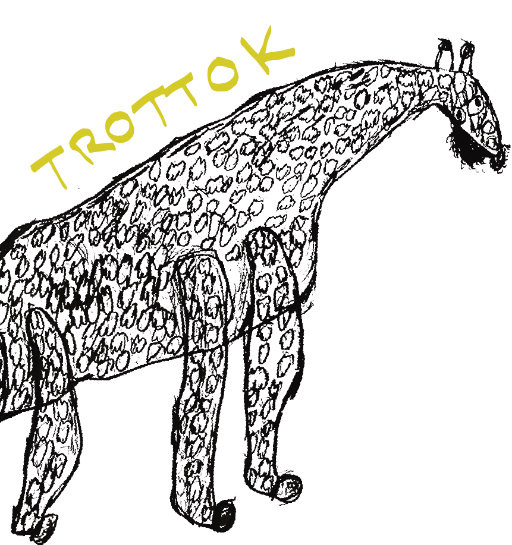

Art Brut
L'Art Brut è un concetto coniato dall'artista e critico francese Jean Dubuffet negli anni '40 per definire l'arte prodotta al di fuori dei circuiti artistici tradizionali. Non nasce dalla scuola, dalle accademie o dal mercato dell'arte, ma da persone autodidatte "outsider", emarginate o con fragilità. Nasce dall'urgenza di esprimere un mondo interiore, senza filtri né regole estetiche.